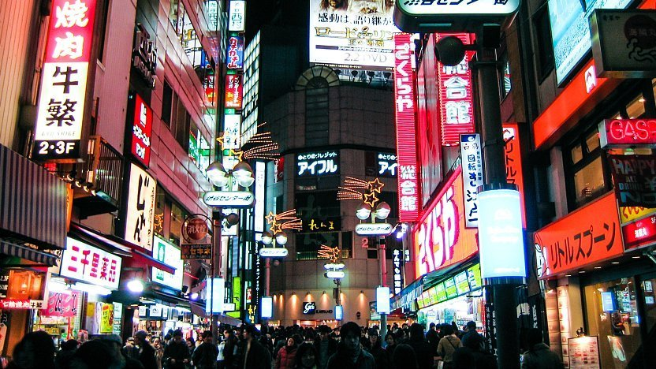
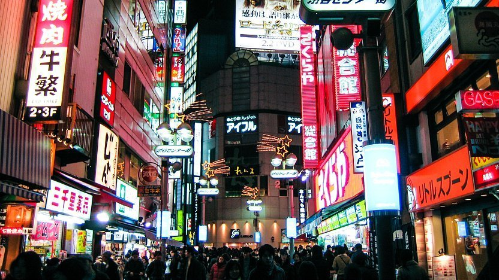

«
⇧
TOKYO
Tokyo is a fascinating place with a distinctive culture that combines traditional Japanese practices
with contemporary technology and trends. There are many ways for visitors to Tokyo to engage with this culture,
from attending traditional tea ceremonies or touring historic temples to perusing the city's cutting-edge
fashion, music, and art scenes. Tokyo is also an excellent destination for foodies to visit because the city is
home to some of the best sushi, ramen, and street food in the entire globe. Tokyo is moreover a nice and
delightful destination to visit because of its reputation for cleanliness and safety. Tokyo is undoubtedly a
must-visit location for anyone interested in Japanese culture or just looking for a distinctive and fascinating
travel experience because of its never-ending attractions and rich cultural experiences.
PLACES TO VISIT
1. SHIBUYA
WHY VISIT SHIBUYA?
The vibrant center of Shibuya is unmissable if you're traveling through the Tokyo area and is
probably the city's youth's heart and soul. The classic scramble crossing and other well-known landmarks
make this neighborhood a must-visit for stylish young culture and nightlife.
- Viewing people at the chaotic Shibuya Crossing
- Greeting the statue of Hachiko, a beloved and devoted dog in Japan
- The best nightlife in Tokyo can be found in Center Gai and Dogenzaka.
2. INOKASHIRA PARK
WHY VISIT INOKASHIRA PARK?
- Visit the blooming flowers in late March to early April.
- Ride a swan boat on the lake.
- Visit the renowned Ghibli Museum, located in the park's southern section; advance ticket reservations
are recommended.
3. SHINJUKU GYOEN NATIONAL GARDEN
WHY VISIT SHINJUKU GYOEN NATIONAL GARDEN?
- Beautiful gardens and landscapes with a mix of traditional French, English, and Japanese traditions
provide a tranquil haven from the hectic city.
- Springtime's cherry blossom season, when more than 1,000 cherry trees bloom in a variety of pink and
white hues, draws tourists from around the world.
- With more than 20,000 trees and 1,500 different plant types, it is a haven for nature enthusiasts and
botanists.
- Picnic areas with walking trails provide a chance to unwind and take in the view.

 
